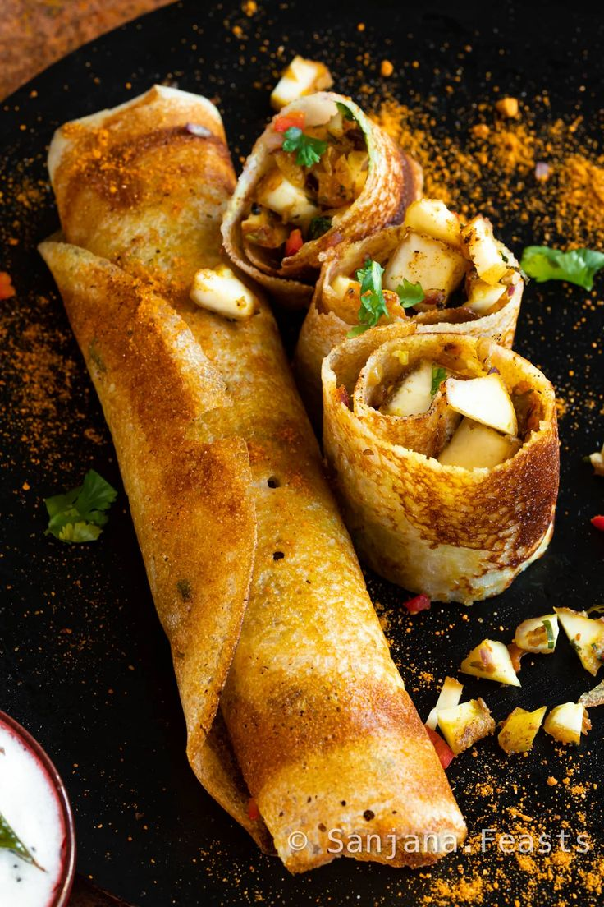

Masala Dosa
Masala Dosa is a crispy South Indian crepe filled with a spicy potato mixture and served with coconut chutney and sambar. It’s golden, crispy, and packed with flavor!

Ingredients
- 2 cups dosa batter (fermented)
- 2 boiled potatoes, mashed
- 1 onion, finely sliced
- 1 green chili, chopped
- 1/2 tsp mustard seeds
- 1/2 tsp turmeric powder
- 5-6 curry leaves
- Salt to taste
- 2 tbsp oil
Instructions
- Heat oil in a pan. Add mustard seeds, curry leaves, green chili, and onions. Sauté until translucent.
- Add turmeric, mashed potatoes, and salt. Mix well and cook for 2-3 minutes.
- Heat a non-stick tawa. Pour a ladleful of dosa batter and spread thin in a circular motion.
- Drizzle oil around edges. Cook until golden and crispy.
- Place some potato filling in the center and fold the dosa. Serve hot with chutney and sambar.